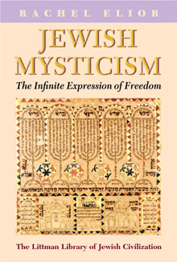

Jewish Mysticism
The Infinite Expression of Freedom
Translated from Hebrew by Yudith Nave and Arthur Millman
The corpus of Jewish mystical writings has developed over thousands of years in different parts of the world. Its creators sought to discover hidden realms that would shed light on existing reality. The literature they created, one of the central sources of inspiration of religious thought, comprises hundreds of volumes. This masterly investigation of the Jewish mystical phenomenon, from antiquity to the twentieth century, contextualizes it in the spiritual and historical circumstances in which it evolved.
More info
Mysticism, which transcends the boundaries of time and space and refers to a reality not grasped by means of ordinary human cognition, is one of the central sources of inspiration of religious thought. It is an attempt to decode the mystery of divine existence by penetrating to the depths of consciousness through language, memory, myth, and symbolism. Delving deep into the psyche, mystics strive to redeem perceived reality from its immediate meaning.
Mystical texts constitute a history of this religious creativity, of man’s attempt to reveal the divine structure underlying the chaos of reality and thereby endow life with hope and purpose. By offering an alternative perspective on the world that gives expression to yearnings for freedom and change, mysticism engenders new modes of authority and leadership; as such it plays a decisive role in moulding religious and social history. For all these reasons, the mystical corpus deserves study and discussion in the framework of cultural criticism and research.
This study is a lyrical exposition of the Jewish mystical phenomenon. It is based on a close reading of the hundreds of volumes written by Jewish mystics and incorporates mystical testimonies drawn from the different countries and cultural environments in which Jews have lived. Rachel Elior’s purpose is to present, as accurately as possible, the meanings of the mystical works as they were perceived by their creators and readers. At the same time, she contextualizes them within the boundaries of the religion, culture, language, and spiritual and historical circumstances in which the destiny of the Jewish people has evolved..
The author succeeds in drawing the reader into a mystical world. With great intensity, she conveys the richness of the mystical experience in discovering the infinity of meaning embedded in the sacred text; teasing out the recurring themes, she explains the multivalent symbols. Using copious extracts from Jewish mystical sources, she illustrates the varieties of the mystical experience from antiquity to the twentieth century. She succeeds in eloquently conveying how mystics try to decipher reality by penetrating beyond its apparent boundaries: how they experience spiritual powers symbolically, imaginatively, or visually; how hidden truths are revealed in visions or dreams, in an epiphany or as ‘lightning’; how they are ‘engraved’ in the mind or illuminate in the soul. Most of the texts she draws on are written in very obscure language, but the skilful translations communicate the mystical experiences vividly and make it easy for the reader to understand how Elior uses them to explain the relationship between the revealed world and the hidden world and between the mystical world and the traditional religious world, with all the social and religious tensions this has caused.
About the author
Rachel Elior is John and Golda Cohen Professor of Jewish Philosophy and Jewish Mystical Thought at the Hebrew University of Jerusalem. She has been a research fellow and visiting professor at University College London, the University of Amsterdam, Oberlin College, the University of Michigan at Ann Arbor, the Oxford Centre for Hebrew and Jewish Studies, Case Western University, Yeshiva University, Tokyo University, and Princeton University. She is the author of numerous works on Jewish mysticism and hasidism, two of which are also published by the Littman Library: The Three Temples: On the Emergence of Jewish Mysticism (2004), and The Mystical Origins of Hasidism (2006). The recipient of many honours, she was awarded the 2006 Gershom Scholem Prize for the Study of Kabbalah and Jewish Mysticism by the Israel Academy of Sciences and Humanities.
Contents
Note on Transliteration
1 The Jewish Mystical Library and the New Vision of Reality
2 The Infinity of Meaning Embedded in the Sacred Text
3 The Mystical Figure: Life without Limits
4 Mystical Language and Magical Language: 'Had I been using tongues of men and angels'
Appendix: Historical and Literary Figures, Kabbalists, and Mystics Mentioned in Jewish Mystical Literature
Bibliography
Index
Reviews
'Will greatly reward the non-specialist reader who is willing to put in some effort in order to receive a taste of this amazing Jewish literary tradition.'
Aaron Howard, Jewish Herald-Voice
'A useful overview of Jewish mystical thought, overflowing with interesting insights.'
James R. Davila, Journal of Jewish Studies
'The book is extremely successful in delineating the existential meaning of the mystical phenomenon, and gives great insight into the popularity and attraction of this highly influential strand of Judaism.'
Tradition

208 pages
ISBN: 978-1-874774-67-9
978-1-906764-04-3 paperback
£16.95 / $24.95 paperback
£29.95 / $45.00
Published 3 December 2009 paperback